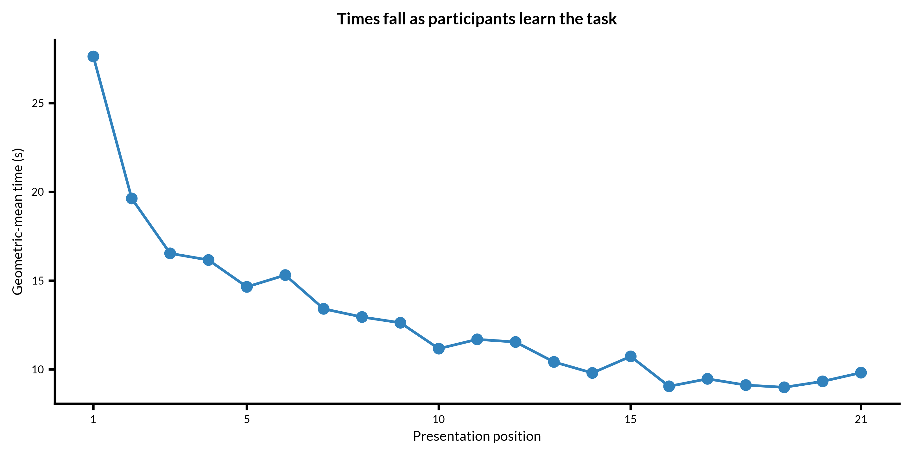

Completion time for both tasks: how long participants spent on each trial page, by visualization type, and (for Task 1) how time relates to accuracy.
Outlier rule
One rule applies to every table, figure, and model on this page: a trial page time above 180 s (3 minutes) is excluded.
Why a fixed cap. Each trial is one decision on one page. The median page time is 12 s (Task 1) and 13 s (Task 2), so a page open for more than three minutes (over ten times the median) most likely records an interruption, not time spent on the task. The longest pages lasted 5,264 s and 11,221 s. The cap is fixed in seconds rather than estimated from the data, so it does not depend on which visualizations are slow.
What it removes. Task 1: 19 of 3,129 trials (0.6%, from 11 participants). Task 2: 21 of 3,129 trials (0.7%, from 15 participants).
What it replaces. Earlier versions of this page dropped trials outside 1.5 × IQR within each visualization for the descriptive tables only, while the models kept every trial. That rule removed 259 (Task 1, 8.3%) and 230 (Task 2, 7.4%) trials, mostly ordinary slow trials. The cap was chosen after the time distributions had been seen, so both alternatives are reported as sensitivity analyses below.
What the model estimates are. The models analyze log time. Back-transformed estimates are geometric mean times for a typical participant (participant effect at zero) at the average presentation position. They are not arithmetic mean times, which are larger because time is right-skewed. Differences from Basic topoplot are reported as ratios of geometric means: a ratio of 1.40 means 40% longer.
Multiple comparisons. The primary comparisons are the six visualizations against Basic topoplot within each task, with Dunnett-adjusted 95% confidence intervals and p values (emmeansdunnettx). The same family is used on the Task 1, Task 2 and rating pages.
Task 1: comparison
SoSci Survey records the time spent on each questionnaire page. Each Task 1 trial has its own page (pages 5–25 hold trials 1–21), and a page keeps its number when the display order is randomized. TIME005–TIME025 are therefore the times of trials 1–21. Each time is linked to its trial, and the presentation position is taken from the logged display order.
The check below plots time by presentation position. With a correct link, the first trial a participant sees is the slowest, and times then fall as participants learn the task.
NoteCheck: completion time by presentation position
Code
task1_time %>%group_by(position) %>%summarise(geometric_mean =exp(mean(log(time_sec))), .groups ="drop") %>%ggplot(aes(position, geometric_mean)) +geom_line(colour ="#3182BD", linewidth =0.8) +geom_point(colour ="#3182BD", size =2.5) +scale_x_continuous(breaks =c(1, 5, 10, 15, 21)) +labs(x ="Presentation position",y ="Geometric-mean time (s)",title ="Times fall as participants learn the task" ) +theme_classic(base_family ="Lato", base_size =16) +theme(plot.title =element_text(hjust =0.5, face ="bold"))

Code
summarise_observed_time <-function(time_data) { time_data %>%group_by(vistype) %>%summarise(n =n(),median_sec =median(time_sec),geometric_mean_sec =exp(mean(log(time_sec))),mean_sec =mean(time_sec),sd_sec =sd(time_sec),.groups ="drop" ) |>arrange(median_sec) |>mutate(vistype =table_vistype(vistype),across(c(median_sec, geometric_mean_sec, mean_sec, sd_sec), \(x) round(x, 1)) )}observed_time_columns <-c("Visualization type","Responses","Median (s)","Geometric mean (s)","Mean (s)","SD (s)")task1_time %>%summarise_observed_time() |> knitr::kable(format ="html",col.names = observed_time_columns,caption =paste0("Observed comparison-task completion time by visualization type ","(trial pages of at most ", time_cap_sec, " s)" ),table.attr = kable_table_attributes )
Observed comparison-task completion time by visualization type (trial pages of at most 180 s)
Visualization type
Responses
Median (s)
Geometric mean (s)
Mean (s)
SD (s)
Basic topoplot
446
10
10.5
14.9
16.9
Animation
447
11
11.6
15.3
13.7
Confidence intervals
444
11
11.7
16.0
15.9
Uncertainty markers
444
11
11.5
17.6
21.0
Bivariate range
445
12
12.1
17.4
17.9
Adjacent plots
443
14
14.5
20.0
19.4
Bivariate corner
441
14
14.8
21.9
22.5
Code
# Log scale: the model works on log time, and a raw axis up to the cap would# squash the bulk of the distribution. Horizontal line = observed geometric mean.task1_time_violin <-ggplot(task1_time, aes(vistype, time_sec)) +geom_violin(trim =TRUE,fill ="#6BAED6",colour ="#333333",linewidth =0.6 ) +scale_y_log10(breaks =c(2, 5, 10, 20, 50, 100, 180))task1_time_violin_geometry <-ggplot_build(task1_time_violin)$data[[1]] %>%transmute(x_position =as.numeric(x),log10_time = y,half_width = violinwidth * width /2 )task1_time_mean_bars <- task1_time %>%group_by(vistype) %>%summarise(log10_mean =mean(log10(time_sec)), .groups ="drop") %>%mutate(x_position =match(as.character(vistype),sort(unique(as.character(task1_time$vistype))) ) ) %>%rowwise() %>%mutate(half_width =approx(x = task1_time_violin_geometry$log10_time[ task1_time_violin_geometry$x_position == x_position ],y = task1_time_violin_geometry$half_width[ task1_time_violin_geometry$x_position == x_position ],xout = log10_mean,rule =2 )$y,x_start = x_position - half_width,x_end = x_position + half_width,geometric_mean =10^log10_mean ) %>%ungroup()task1_time_violin +geom_segment(data = task1_time_mean_bars,aes(x = x_start,xend = x_end,y = geometric_mean,yend = geometric_mean ),inherit.aes =FALSE,linewidth =0.6,colour ="#333333" ) +scale_x_discrete(labels = vistype_labels) +labs(title ="Time spent by visualization type",x =NULL,y ="Seconds spent on page (log scale)",caption ="Horizontal line: observed geometric mean." ) +theme_classic(base_family ="Lato", base_size =20) +theme(plot.title =element_text(hjust =0.5, face ="bold"),plot.caption =element_text(hjust =0.5, face ="italic"),axis.text.x =element_text(angle =35, hjust =1) )
Comparison task: model-estimated geometric mean completion time
Visualization type
Geometric mean time, typical participant (s)
Lower 95% CI
Upper 95% CI
Basic topoplot
10.4
9.5
11.4
Uncertainty markers
11.7
10.7
12.9
Animation
11.8
10.7
13.0
Confidence intervals
11.8
10.8
13.0
Bivariate range
12.3
11.2
13.6
Adjacent plots
14.2
12.9
15.7
Bivariate corner
14.5
13.2
16.0
Code
time_model_note("Trial position")
Model details:
Data: Trial pages of at most 180 s (outlier rule at the top of the page).
Model: Gaussian linear mixed model for log completion time: log(time_sec) ~ vistype + position_c + (1 | ID).
Reference visualization: Basic topoplot.
Trial position: Estimates were calculated at the average presentation position.
Estimand: Back-transformed from log seconds, so each estimate is a geometric mean time for a typical participant (participant effect at zero), not an arithmetic mean time. Differences from Basic are ratios of geometric means.
Intervals: 95% confidence intervals, asymptotic (normal) degrees of freedom.
time_contrast_table( task1_time_contrasts,paste("Comparison task: ratio of geometric mean time to Basic topoplot,","Dunnett-adjusted 95% CIs and p values (six comparisons with Basic)" ))
Comparison task: ratio of geometric mean time to Basic topoplot, Dunnett-adjusted 95% CIs and p values (six comparisons with Basic)
Visualization type
Ratio to Basic
Lower 95% CI
Upper 95% CI
p (Dunnett-adjusted)
Bivariate corner
1.39
1.26
1.54
< 0.001
Adjacent plots
1.37
1.24
1.51
< 0.001
Bivariate range
1.19
1.07
1.31
< 0.001
Confidence intervals
1.14
1.03
1.26
0.00555
Animation
1.14
1.03
1.26
0.00695
Uncertainty markers
1.13
1.02
1.25
0.01110
With Dunnett-adjusted intervals, all six visualizations took longer than Basic topoplot: Bivariate corner (1.39 [1.26, 1.54]), Adjacent plots (1.37 [1.24, 1.51]), Bivariate range (1.19 [1.07, 1.31]), Confidence intervals (1.14 [1.03, 1.26]), Animation (1.14 [1.03, 1.26]), and Uncertainty markers (1.13 [1.02, 1.25]). Ratios above 1 mean longer than Basic topoplot.
Association between completion time and accuracy
The following analyses ask whether longer completion times were associated with greater accuracy. They describe associations and do not establish that spending more time caused participants to answer correctly. They use the same trials as the time model (pages of at most 180 s).
Participant-level correlation between accuracy and typical completion time
Participants
Pearson r
Lower 95% CI
Upper 95% CI
p value
149
0.105
-0.057
0.262
0.202
Code
model_table_note(paste0("<ul>","<li><strong>Unit:</strong> One record per participant (N = ", task1_n_participants,").</li>","<li><strong>Accuracy:</strong> Proportion correct across the participant's ","retained trials (at most ", task1_n_trials,").</li>","<li><strong>Typical time:</strong> Mean log completion time, equivalent to the ","log of the participant's geometric mean time.</li>","<li><strong>Interpretation:</strong> The correlation asks whether participants ","who were generally slower were also generally more accurate.</li>","</ul>" ),label ="Correlation details")
Correlation details:
Unit: One record per participant (N = 149).
Accuracy: Proportion correct across the participant’s retained trials (at most 21).
Typical time: Mean log completion time, equivalent to the log of the participant’s geometric mean time.
Interpretation: The correlation asks whether participants who were generally slower were also generally more accurate.
Code
task1_time_accuracy_effects %>%transmute(Association = comparison,`Odds ratio`=sprintf("%.3f", odds_ratio),`Lower 95% CI`=sprintf("%.3f", lower_ci),`Upper 95% CI`=sprintf("%.3f", upper_ci),`p value (unadjusted)`=format_pvalue_html(p_value) ) %>% knitr::kable(format ="html",escape =FALSE,caption ="Adjusted association between completion time and trial accuracy",table.attr = kable_table_attributes )
Adjusted association between completion time and trial accuracy
Association
Odds ratio
Lower 95% CI
Upper 95% CI
p value (unadjusted)
Within participants: twice the usual trial time
0.745
0.660
0.842
<0.001
Between participants: twice the typical completion time
1.195
0.988
1.445
0.0671
Code
model_table_note(paste0("<ul>","<li><strong>Model:</strong> Binomial mixed-effects model with a logit link: ","<code>correct ~ log_time_within + log_time_between_c + vistype + ","pattern + position_c + (1 | ID) + (1 | stimulus) + ","(1 | wrong_image)</code>.</li>","<li><strong>Within-participant effect:</strong> Compares a participant's ","longer and shorter trials.</li>","<li><strong>Between-participant effect:</strong> Compares participants with ","different typical completion times.</li>","<li><strong>Adjustment:</strong> Visualization type, ERP pattern, presentation ","position, participant baseline accuracy, and target- and distractor-stimulus ","difficulty.</li>","<li><strong>Effect scale:</strong> Odds ratios compare a doubling of completion ","time; values above 1 indicate greater odds of a correct response.</li>","<li><strong>p values:</strong> Wald tests of the two time terms, not adjusted ","for multiplicity.</li>","</ul>" ),label ="Model details")
Within-participant effect: Compares a participant’s longer and shorter trials.
Between-participant effect: Compares participants with different typical completion times.
Adjustment: Visualization type, ERP pattern, presentation position, participant baseline accuracy, and target- and distractor-stimulus difficulty.
Effect scale: Odds ratios compare a doubling of completion time; values above 1 indicate greater odds of a correct response.
p values: Wald tests of the two time terms, not adjusted for multiplicity.
Code
# Plain-language descriptions follow the confidence intervals, so the text stays# correct when the data change.describe_association <-function(lower, upper, null, more, less, none) { dplyr::case_when(lower > null ~ more, upper < null ~ less, TRUE~ none)}describe_time_accuracy <-function(correlation_table, effects) {c(correlation =describe_association( correlation_table$lower_ci, correlation_table$upper_ci,0,"participants who were generally slower were more accurate","participants who were generally slower were less accurate","participants' typical speed was not clearly associated with their accuracy" ),within =describe_association( effects$lower_ci[1], effects$upper_ci[1],1,"a participant's slower trials were more often answered correctly","a participant's slower trials were less often answered correctly","a participant's slower trials were not clearly more or less accurate" ),between =describe_association( effects$lower_ci[2], effects$upper_ci[2],1,"after adjustment, generally slower participants were more accurate","after adjustment, generally slower participants were less accurate","after adjustment, generally slower participants were not clearly more or less accurate" ) )}task1_time_accuracy_text <-describe_time_accuracy( task1_time_accuracy_correlation_table, task1_time_accuracy_effects)
At the participant level, accuracy and typical completion time had a Pearson correlation of 0.105 (95% CI -0.057 to 0.262, p = 0.202). In the adjusted mixed model, doubling the time spent on a trial was associated with an odds ratio of 0.745 for a correct response (95% CI 0.660 to 0.842). The between-participant odds ratio was 1.195 (95% CI 0.988 to 1.445).
In short, participants’ typical speed was not clearly associated with their accuracy; a participant’s slower trials were less often answered correctly; and after adjustment, generally slower participants were not clearly more or less accurate. These are associations, not effects of time: a harder trial can both take longer and be answered incorrectly more often.
Code
task1_time_accuracy_summary <- tibble::tibble(analysis =c("Overall participant correlation","Within participants","Between participants (adjusted)" ),estimate =c(sprintf("r = %.3f (95%% CI %.3f to %.3f)", task1_time_accuracy_correlation_table$correlation, task1_time_accuracy_correlation_table$lower_ci, task1_time_accuracy_correlation_table$upper_ci ),sprintf("OR = %.3f (95%% CI %.3f to %.3f)", task1_time_accuracy_effects$odds_ratio[1], task1_time_accuracy_effects$lower_ci[1], task1_time_accuracy_effects$upper_ci[1] ),sprintf("OR = %.3f (95%% CI %.3f to %.3f)", task1_time_accuracy_effects$odds_ratio[2], task1_time_accuracy_effects$lower_ci[2], task1_time_accuracy_effects$upper_ci[2] ) ),p_value =c( task1_time_accuracy_correlation_table$p_value, task1_time_accuracy_effects$p_value ),summary =paste0(toupper(substring(task1_time_accuracy_text, 1, 1)),substring(task1_time_accuracy_text, 2),"." ))task1_time_accuracy_summary %>%transmute(Analysis = analysis,`Estimate (95% CI)`= estimate,`p value (unadjusted)`=format_pvalue_html(p_value),`Plain-language summary`= summary ) %>% knitr::kable(format ="html",escape =FALSE,caption ="Short summary of completion-time and accuracy results",table.attr = kable_table_attributes )
Short summary of completion-time and accuracy results
Analysis
Estimate (95% CI)
p value (unadjusted)
Plain-language summary
Overall participant correlation
r = 0.105 (95% CI -0.057 to 0.262)
0.2017
Participants' typical speed was not clearly associated with their accuracy.
Within participants
OR = 0.745 (95% CI 0.660 to 0.842)
<0.001
A participant's slower trials were less often answered correctly.
Between participants (adjusted)
OR = 1.195 (95% CI 0.988 to 1.445)
0.0671
After adjustment, generally slower participants were not clearly more or less accurate.
Task 2: detection
SoSci Survey records the time spent on each questionnaire page. Each Task 2 trial has its own page (pages 29–49 hold trials 1–21), and a page keeps its number when the display order is randomized. TIME029–TIME049 are therefore the times of trials 1–21. Each time is linked to its trial, and the presentation position is taken from the order variables (A207).
The check below plots time by presentation position. With a correct link, the first trial a participant sees is the slowest, and times then fall as participants learn the task.
Only non-missing positive times with an identified visualization type and at most 180 s are retained (outlier rule). The same trials enter the descriptive table and the model.
The model analyzes log completion time because trial times are positive and typically right-skewed:
log(time_sec) ~ vistype + position_c + (1| ID)
The participant random intercept allows participants to have different typical response speeds. Presentation position adjusts for linear changes in speed across the 21 trials. Back-transformed estimates are geometric mean times for a typical participant.
NoteCheck: completion time by presentation position
Code
task2_time %>%group_by(position) %>%summarise(geometric_mean =exp(mean(log(time_sec))), .groups ="drop") %>%ggplot(aes(position, geometric_mean)) +geom_line(colour ="#3182BD", linewidth =0.8) +geom_point(colour ="#3182BD", size =2.5) +scale_x_continuous(breaks =c(1, 5, 10, 15, 21)) +labs(x ="Presentation position",y ="Geometric-mean time (s)",title ="Times fall as participants learn the task" ) +theme_classic(base_family ="Lato", base_size =16) +theme(plot.title =element_text(hjust =0.5, face ="bold"))
Diagnostic preview: first 20 detection-task completion-time records
Participant ID
Timing variable
Time (seconds)
Trial
Presentation position
Visualization type
1
TIME029
38
1
17
Adjacent plots
1
TIME030
20
2
1
Adjacent plots
1
TIME031
13
3
16
Adjacent plots
1
TIME032
17
4
6
Bivariate corner
1
TIME033
46
5
2
Bivariate corner
1
TIME034
21
6
7
Bivariate corner
1
TIME035
12
7
18
Bivariate range
1
TIME036
12
8
8
Bivariate range
1
TIME037
9
9
11
Bivariate range
1
TIME038
11
10
13
Confidence intervals
1
TIME039
7
11
5
Confidence intervals
1
TIME040
6
12
15
Confidence intervals
1
TIME041
24
13
19
Uncertainty markers
1
TIME042
30
14
12
Uncertainty markers
1
TIME043
18
15
14
Uncertainty markers
1
TIME044
11
16
9
Animation
1
TIME045
12
17
4
Animation
1
TIME046
6
18
10
Animation
1
TIME047
6
19
21
Basic topoplot
1
TIME048
14
20
3
Basic topoplot
Code
task2_time %>%summarise_observed_time() |> knitr::kable(format ="html",col.names = observed_time_columns,caption =paste0("Observed detection-task completion time by visualization type ","(trial pages of at most ", time_cap_sec, " s)" ),table.attr = kable_table_attributes )
Observed detection-task completion time by visualization type (trial pages of at most 180 s)
Detection task: model-estimated geometric mean completion time
Visualization type
Geometric mean time, typical participant (s)
Lower 95% CI
Upper 95% CI
Basic topoplot
10.2
9.3
11.1
Animation
13.0
11.9
14.2
Bivariate range
13.5
12.3
14.8
Uncertainty markers
13.6
12.4
14.9
Confidence intervals
14.0
12.8
15.3
Adjacent plots
14.2
13.0
15.6
Bivariate corner
16.1
14.7
17.6
Code
time_model_note()
Model details:
Data: Trial pages of at most 180 s (outlier rule at the top of the page).
Model: Gaussian linear mixed model for log completion time: log(time_sec) ~ vistype + position_c + (1 | ID).
Reference visualization: Basic topoplot.
Presentation position: Estimates were calculated at the average presentation position.
Estimand: Back-transformed from log seconds, so each estimate is a geometric mean time for a typical participant (participant effect at zero), not an arithmetic mean time. Differences from Basic are ratios of geometric means.
Intervals: 95% confidence intervals, asymptotic (normal) degrees of freedom.
time_contrast_table( task2_time_contrasts,paste("Detection task: ratio of geometric mean time to Basic topoplot,","Dunnett-adjusted 95% CIs and p values (six comparisons with Basic)" ))
Detection task: ratio of geometric mean time to Basic topoplot, Dunnett-adjusted 95% CIs and p values (six comparisons with Basic)
Visualization type
Ratio to Basic
Lower 95% CI
Upper 95% CI
p (Dunnett-adjusted)
Bivariate corner
1.58
1.44
1.74
<0.001
Adjacent plots
1.40
1.27
1.53
<0.001
Confidence intervals
1.38
1.25
1.51
<0.001
Uncertainty markers
1.33
1.21
1.47
<0.001
Bivariate range
1.33
1.21
1.46
<0.001
Animation
1.28
1.16
1.40
<0.001
With Dunnett-adjusted intervals, all six visualizations took longer than Basic topoplot: Bivariate corner (1.58 [1.44, 1.74]), Adjacent plots (1.40 [1.27, 1.53]), Confidence intervals (1.38 [1.25, 1.51]), Uncertainty markers (1.33 [1.21, 1.47]), Bivariate range (1.33 [1.21, 1.46]), and Animation (1.28 [1.16, 1.40]). Ratios above 1 mean longer than Basic topoplot.
Sensitivity analyses: outlier handling
NoteSensitivity: three outlier rules
The main analysis excludes trial pages above 180 s. Here the time models are refitted with all trials kept and with the previous 1.5 × IQR rule within each visualization. Cells show the ratio of geometric mean time to Basic topoplot with its Dunnett-adjusted 95% CI; bold cells exclude 1.
The verdict changes for 1 comparison (Task 1, Uncertainty markers: slower with the cap, slower with all trials, not clearly different with the IQR rule).
Task 1 time–accuracy associations.
Code
time_accuracy_sensitivity %>%transmute(Association = comparison,rule =unname(time_rule_labels[rule]),cell =sprintf("%.3f [%.3f, %.3f]", odds_ratio, lower_ci, upper_ci) ) %>% tidyr::pivot_wider(names_from = rule, values_from = cell) %>% knitr::kable(format ="html",caption ="Odds ratio for a doubling of time [95% CI] under three outlier rules",table.attr = kable_table_attributes )
Odds ratio for a doubling of time [95% CI] under three outlier rules
Association
Cap at 180 s (main)
All trials kept
1.5 × IQR within visualization
Within participants: twice the usual trial time
0.745 [0.660, 0.842]
0.789 [0.708, 0.881]
0.788 [0.679, 0.916]
Between participants: twice the typical completion time
1.195 [0.988, 1.445]
1.215 [1.013, 1.458]
1.373 [1.067, 1.768]
The verdict of 1 time–accuracy association(s) depends on the outlier rule; see the table.